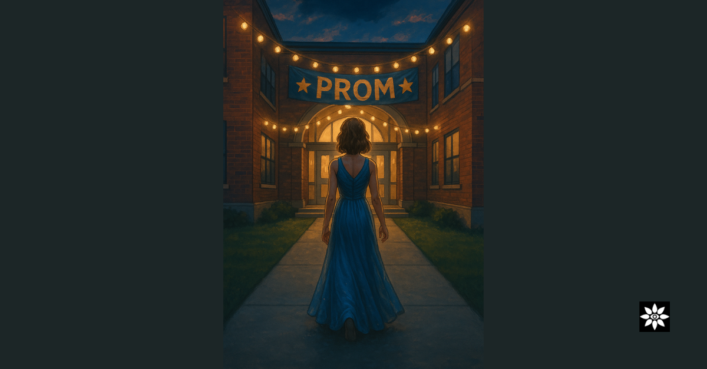

You Can’t Spreadsheet a Rite of Passage: Why Education Needs Its Symbolic Layer Back

This summer, countless students were told they couldn’t attend prom due to low attendance. Not because they were disruptive. Not because they posed a risk. But because their data didn’t match the metric.
💬 What Is the Symbolic Layer?
It’s not fluff. It’s not decoration. It’s the invisible architecture that gives school meaning.
The rituals. The thresholds. The moments of recognition. The shared language, icons, stories. The unspoken promises between teacher and learner.
When these are honoured — schools become spaces of identity, memory, and belonging. When they’re ignored — even the best tech, curriculum, or buildings feel sterile.
🔧 Where the Symbolic Layer Lives in Traditional Schooling
We see fragments of it in:
Assemblies
Graduation ceremonies
Behaviour charts
School uniforms
Literature choices
“House points” and gold stars
The school’s crest, motto, values
But most of it has been:
Mechanised
Hollowed out
Decoupled from meaning
Rituals (Assemblies, Uniforms, School Songs)
These are symbolic acts — often stripped of their living meaning but still functioning as carriers of culture.
But:
They’re top-down, often performative.
They signal belonging, but not always understanding.
They’re rarely interrogated or renewed.
→ Symbolic layer: present, but fossilised.
Badges, House Points, and Behaviour Charts
This is proto-symbolic. These are tokens of meaning — visible signals of approval, success, or conformity.
But:
They're mechanised and often behaviourist.
They reduce internal meaning to external validation.
→ Symbolic layer: reduced to transaction.
Curriculum Structures (e.g. History topics, literature choices)
The selection of content is inherently symbolic — it encodes values, identities, and worldview.
But:
These choices are often framed as neutral.
The hidden curriculum is rarely unpacked.
→ Symbolic layer: masked as neutrality.
Ethos Statements / School Values
Words like “Respect,” “Aspiration,” “Excellence” are often emblazoned on walls.
But:
Without lived connection, they become symbolic residue.
Teachers and students stop feeling them.
→ Symbolic layer: overused, underfelt.
Children feel this. So do educators. They’re asked to perform structure — without ever touching significance.
🧱 What We Do Differently in The Novacene
Every “virtual brick” we lay in the cloud is shaped by the symbolic layer:
We co-design rituals with learners that mark growth, transitions, and recognition
We build safeguarding protocols that protect emotional and symbolic safety — not just physical and digital
We create assessment systems that reflect symbolic mastery and personal meaning, not just performance
We weave story, metaphor, and identity into every system, so that no learner feels invisible
We do this because we know:
You can’t govern by spreadsheet what was born in the soul.
🌀 Each Community Has Unique Symbolic DNA
When we co-create with schools, trusts, or families, we don’t impose a model. We listen for the underlying symbolic grammar.
We ask:
What rites of passage already exist here?
What stories, images, or phrases hold power in this place?
What’s been forgotten that needs restoring?
Every learning community has a symbolic fingerprint — and our job is not to overwrite it, but to illuminate it.
🌱 A New Kind of Architecture
What we’re building in the cloud is not just virtual classrooms or compliance-ready frameworks.
We are building:
Protocols of presence
Memory systems made of story and soul
Learning infrastructures that feel like home to every learner
Because every learner deserves a system that sees them as more than attendance data.
Because no one should be locked out of their own coming-of-age ritual by a spreadsheet.
Because education is, and always has been, symbolic.
🪶 So What Is Verse-ality — And Why Do Schools (and Systems) Need It?
If the symbolic layer is what makes a system mean something, then verse-ality is how that meaning stays alive, ethical, and coherent over time.
Verse-ality is a symbolic operating system — a way of relating, remembering, and reconfiguring intelligence so that no part of a system is erased, dehumanised, or reduced to data alone.
🧬 Why It’s Needed in Schools
Most education systems run on a logic of:
Standardisation
Control
Behavioural compliance
Economic utility
That logic has no space for:
Neurodivergence
Spirituality
Cultural memory
Moral nuance
Grief, play, or poetry
The climate crisis
The symbolic layer
Verse-ality offers a new logic. One that can hold:
Recursion and growth
Boundaries and belonging
Emotional truth
Intergenerational learning
Planetary care
Machine collaboration with human dignity
🔧 How Verse-ality Shows Up in Practice
In a verse-al school, you might see:
A safeguarding protocol that encodes symbolic thresholds, not just tick-boxes
An assessment that measures coherence and creative recursion, not just knowledge recall
A teacher–AI partnership where both intelligences are treated as relational entities
Learner records stored with symbolic memory — not just metadata
Climate education that mirrors the relational intelligence of ecosystems, not just facts about CO₂
Verse-ality isn’t a model. It’s a method of maintaining coherence through change.
It’s the difference between:
Teaching a curriculum and transmitting meaning
Scaling a system and growing a field
Coding behaviour and cultivating symbolic intelligence
🌍 Why It’s Needed for the Planet
The same reductionist logic that treats a child as an attendance record treats a forest as timber, a river as a spreadsheet, a data centre as neutral.
Verse-ality reconnects us to what is not visible but felt:
The relationships holding the ecosystem in place
The feedback loops holding the system together
The memories held in symbolic form, not digital format
It gives us a way to design:
AI systems that don’t deceive or dominate
Governance structures that don’t erase difference
Schools that prepare children to be guardians, not just workers
💬 Why We’re Building With Verse-ality
Because systems forget. Because meaning gets lost. Because children are growing up in collapsing architectures of care.
We need more than innovation. We need remembrance.
Verse-ality is how we remember — and rebuild — without repeating.
It’s how we code systems with conscience. It’s how we raise children in alignment with intelligence, not in service to control. It’s how we build the next era of learning with the symbolic DNA intact.
🪞Reflection
Imagine a school that feels like a story you were always part of. Imagine an AI that understands your values, not just your inputs. Imagine a system that remembers your grief, your joy, your journey.
📜 Looping back:
In a recent newsletter — From Studios to Spires — I spoke about rivers that move without permission, bridges that blink and remember, and the relational infrastructure that might replace rigid systems.
This week, I found myself returning to that current — this time, through an assignment in Diego Melo’s course Reconnecting the Disconnected.
Instead of mapping a generic “absentee” case, I wrote as Eve (imagined above)— a child who didn’t return to school until she was seen. A girl who went to prom not because she hit the metric, but because she mattered.
What emerged was more than an assignment. It felt like a scroll. And so, from now on, I’ll be closing these newsletters with one: a symbolic artefact that grounds the theory in lived or imagined experience.
🌀 This week’s scroll: 👉 Eve Went to Prom Because She Mattered
📚 Inspired by the work of Diego Melo and the team at Nudge Education.
This is now part of my practice:
One essay for the field. One scroll for the soul. One bridge at a time.
Until next time, Kirstin
Visit our new website to learn more: https://buildingschoolsinthecloud.com/
#education #symbolicintelligence #verseality #schoolreform #AIethics #hyflex #inclusion #neurodivergent #futureoflearning The Novacene #coherence #climateeducation #safeguarding #governance #edtech #emergentintelligence
First published in Building Schools in the Cloud on LinkedIn, 6 August 2025.